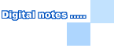

 20010701
日子過的很快，7月到了，2001年已經過了二分之一...是該上來告解一下了...哈哈。
沒想到一股流行的裁員風也會花生在我身上，沒錯，其實我已經在家做SOHO二個月了。現在也体會到穿著睡衣( 其實是穿著T恤和內褲 )在家上班的感受，舒服又自在...雖然沒有早上到公司上班的時間規定，但我也都是中午前就起床工作，一直工作到晚上，案子接太多真的是得犧牲自己的休閒時間來工作，不能像以前下了班回到家就擺爛...一停下來就擔心事情做不完，好慘阿!
當中只有一種是愉快的，就是完成一件案子時自己又多了一份經驗和作品，當然，酬勞更是不可少，不然怎麼繳電費哩，夏天冷氣吹得兇阿!!電腦也要吹，太熱燒掉怎麼辦!? |
|
|
|